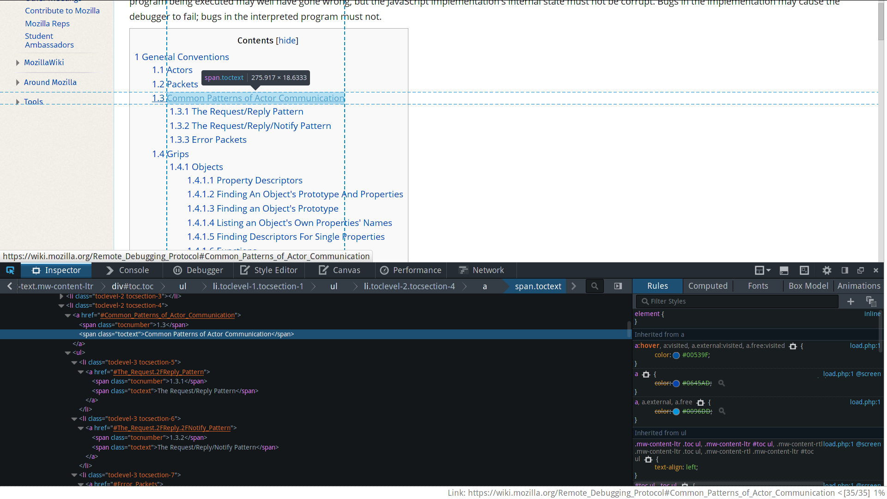

Who am I
- Ying-Ruei Liang (KK)
- Connected device team
- Work on gamming related projects
Outline
/* Basically I'll focus on what I've worked on */
- serious part
- kind of serious part
- totally not serious part
- conclusion
First
Backend for game profiling devtool
What a game developer want to know
- CPU V.S GPU time
- draw calls used in single frame
- WebGL resources usage and state
Actually
We can already achieve some of them now
"CPU V.S GPU time" >> performance debugger
"draw calls used in single frame" >> canvas debugger
"WebGL resources usage and state" >> shader debugger
>> memory debugger
But they are separated functionalities
We want to combine and improve them
The part I worked on
Record and trace WebGL resource (textures, buffers)
Demo time
Challenges I faced
- JavaScript
- RDP (Remote Debugger Protocol)
- Special environment (chrome code and context code)
- Debugging devtools
Remote Debugger Protocol

It's client/server architecture!
Client interacts with actors on the server
What is an actor?
An actor is something on the server that can exchange
JSON packets with the client.
...
{ "to":actor, "type":type, ... }
Demo time
Life should be easier
Hi, I'm protocol.js
, your best friend!
var WebGLActor = exports.WebGLActor = protocol.ActorClass({
typeName: "webgl",
...
setup: method(function({ reload }) {
if (this._initialized) {
return;
}
this._initialized = true;
this._programActorsCache = [];
this._webglObserver = new WebGLObserver();
on(this.tabActor, "window-ready", this._onGlobalCreated);
on(this.tabActor, "window-destroyed", this._onGlobalDestroyed);
on(this._webglObserver, "program-linked", this._onProgramLinked);
if (reload) {
this.tabActor.window.location.reload();
}
}, {
request: { reload: Option(0, "boolean") },
oneway: true
}),
Special running environment
chrome code, xray vision, cloneInto...
No time to explain
Debugging devtools
I still have no idea about this
TDD style, write mochitest first
Progress
/* Still work in progress */
Second
mozbench
A benchmark framework for browsers
How it works
create a file which tells mozbench what to run
V
run mozbench with desirable options
V
post data to Mountain View
V
visualization with Grafana
automated by Jenkins!!
The file
[
{"suite": "webaudio-padenot",
"url": "webaudio-benchmark/index.html",
"number_of_runs": 5,
"timeout": 1200,
"enabled": ["linux", "b2g", "android"],
"name": "name",
"value": "duration"
},
Run mozbench
$ python mozbench.py --run-b2g --post-result
Visualization
/* It's not an image, try it!*/
Third
SimpleBenchmark
A set of relative light wight benchmarks focuses on graphics related performance
Kind of serious part
I'm too dumb and too lazy to remember it
use crontab to run automatically
V
choose lunch randomly everyday
Features
interactive mode
command mode
support cookies
easy to extend
desktop notification (GNU/Linux only)
share with your friends on Facebook(wip)
Demo time
Bad news
It's useless now...
I used to be a vimmer like some of you, then I took an arrow in the knee
What's inside
Quick demo
Conclusion
What I expected before internship
- how it feel like to work
- how much I can do
- which skill I don't have
- I should at least use some C++
What I've got after internship
- JavaScript, JavaScript everywhere!
- node.js
- mocha testing framework
- how to use callback properly in my own project
- learn lots of designs from Mozilla projects
- developing techniques
- knowledge and attractive part of web platform
Unexpected stuff
- had a taste of CTF (thanks, Kinder!)
- emacs
- sent RPs to aseprite
- and be one of collaborators!
- gained some weight